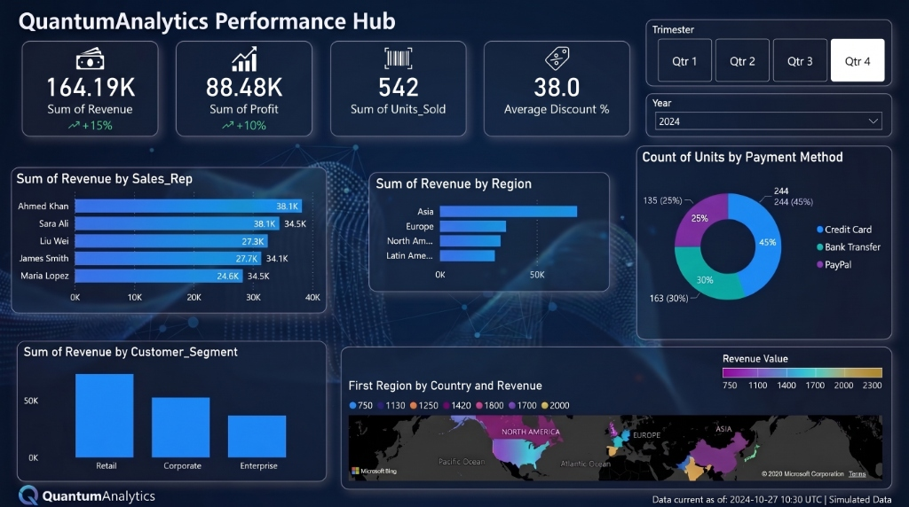

Welcome to the comprehensive breakdown of the QuantumAnalytics Performance Hub. This interactive dashboard was engineered to provide executive-level visibility into global sales metrics and operational efficiency.

High-Level KPIs
The dashboard focuses on delivering immediate, actionable insights through vital top-line metrics that drive business strategy:
- Total Revenue: $164.19K (showing a strong upward trajectory of +15%)
- Total Profit: $88.48K (with a solid +10% growth indicator)
- Volume: 542 total units sold across all regions
- Pricing Strategy: An average discount rate maintained at 38.0%
Sales Representative Performance
A crucial component of the architecture involves tracking individual contributor performance to identify top talent and optimize sales strategies. The dashboard highlights a highly competitive sales environment:
- Ahmed Khan & Sara Ali: Leading the pack, both generating an impressive $38.1K in revenue.
- James Smith: A strong performer contributing $27.7K.
- Liu Wei: Closely following with $27.3K in generated sales.
- Maria Lopez: Securing a solid $24.6K in revenue.
Market & Customer Insights
By segmenting the data, the dashboard reveals critical patterns in customer behavior, geographical strengths, and financial processing preferences:
- Geographic Distribution: Asia dominates the revenue stream, followed closely by Europe and North America, with Latin America representing a smaller market share. The geospatial mapping confirms strong clusters in North America and Asia.
- Customer Segmentation: The 'Retail' sector is the primary revenue driver (exceeding 50K), significantly outpacing both 'Corporate' and 'Enterprise' segments.
- Transaction Preferences: 'Credit Card' transactions are the most popular, accounting for 45% (244 units) of sales. 'Bank Transfers' represent 30% (163 units), while 'PayPal' covers the remaining 25% (135 units).
Portfolio Value
This Power BI dashboard demonstrates a high-level mastery of data modeling, DAX measure creation, and UX-focused visualization design. It proves my ability to transform raw, complex data into an intuitive, interactive narrative that empowers executives to make immediate, data-driven decisions.